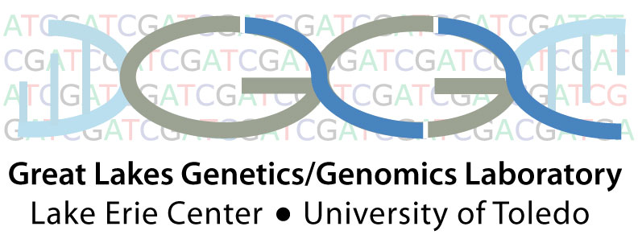

Society of Systematic Biologists
Home of Systematic Biology
Popular contentSyndicateCategories
User loginNavigationWho's onlineThere are currently 0 users and 10 guests online.
|
New SSB web siteThe web site you are viewing was retired 2-Oct-2015. The new site is located at http://systbio.org/. This site will remain in operation until we can transfer the mountain of valuable information that still resides here and nowhere else. Note that this site will no longer be updated, so please do not rely on it to have the latest information about SSB. Many thanks to Rod Page and Reudi Birenheide for maintaining this site so well and for so long! What is systematics?Systematics is the study of biological diversity and its origins. It focuses on understanding evolutionary relationships among organisms, species, higher taxa, or other biological entities, such as genes, and the evolution of the properties of taxa including intrinsic traits, ecological interactions, and geographic distributions. An important part of systematics is the development of methods for various aspects of phylogenetic inference and biological nomenclature/classification. The objective of the Society of Systematic Biologists is the advancement of the science of systematic biology in all its aspects of theory, principles, methodology, and practice, for both living and fossil organisms, with emphasis on areas of common interest to all systematic biologists regardless of individual specialization. By Roderic Page at 2007-08-20 07:01 | read more
Systematics books at Amazon.com (click for more...)Books recently reviewed in Systematic Biology, or written by members of the Society. By Roderic Page at 2005-10-25 13:10 | read more
Issues Online
2014 OfficersPresident: Jack Sites American Museum of Natural History Postdoctoral Fellowships in Bioinformatics and Computational BiologyPostdoctoral Researcher in Fish Genomics and Genetics, University of Toledo, Ohio Qualifications: Ph.D. degree required in hand. Publication of Ph.D. results in peer-reviewed journals required. Excellent recommendation from former advisors required. Teaching and supervisory experience preferred. Data management experience, bioinformatics, and data analysis experience in molecular phylogenetics and population genetics required. DNA extraction, PCR, DNA Sequencing (Sanger and Illumina MiSeq), alignment, and GenBank experience required. Familiarity with QIMME, Unix/Linux operating systems and writing Perl is a plus. Strong communication (written, oral) skills required. Curator, Professor, and Director of Comparative Biology Initiative AMNHSystematics Association Biennial (2015)This three-day meeting of the Systematics Association will be held 26-28 August 2015 at the University of Oxford and comprises four thematic sessions and contributed papers. The organisers are keen to have contributed 15 minute talks. More details at http://www.systass.org/biennial2015/. MCEB - Mathematical and Computational Evolutionary Biology 21-25 June 2015 - Porquerolles Island, South of France
Webpage: http://www.lirmm.fr/mceb2015/ Pre-registration deadline: February 10th Notification to applicants: February 28th Final list of attendees: April 1st Scope: Mathematical and computational tools and concepts form an essential basis for modern evolutionary studies. The goal of the MCEB conference (at its 7th edition) is to bring together scientists with diverse backgrounds to present recent advances and discuss open problems in the field of mathematical and computational evolutionary biology. The theme of this yearís edition will be new data, new questions, new methods. New generation sequencing techniques have multiplied not just the amount, but also the types of genetic data produced, giving rise to new questions, and new methodologies to answer them. These methodologies are often cross-disciplinary, with applications to diverse research topics. General concepts, models, methods and algorithms will also be presented and discussed, just as during the previous conference editions. |
Latest issue
EVOLDIRphylobabble.orgiPhyloPhyloseminarSystematics AssociationNESCentThe Genealogical World of Phylogenetic NetworksCiteULike PhylogenyEvolutionary Bioinformatics
CladisticsBMC Evolutionary Biology
Molecular Biology and Evolution |
 Follow us on Twitter
Follow us on Twitter Find us on Facebook
Find us on Facebook